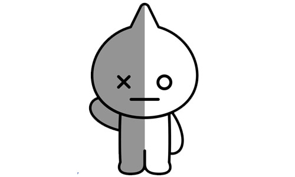

Van representa a los Army. Fue diseñado en color gris y blanco porque son los colores oficiales de BTS. Van fue creado por el integrante de BTS Kim Namjoon (RM). Van es el robot de Tata. La mitad de su cuerpo es gris con un ojo en forma de "X", y la otra mitad es blanca con ojo en forma de "O". Es el protector de BT21.
